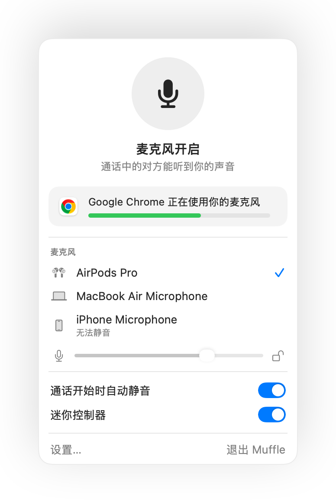

如何在 Mac 上用 AirPods 将 Microsoft Teams 静音
Teams 自带的快捷键 Command-Shift-M 只有在 Teams 窗口处于活动状态时才生效。然而开会时你往往在查看其他内容：文档、浏览器或共享屏幕。
Muffle 让你可以在任何地方将麦克风静音，无论是在 Teams 客户端还是网页版中。只需按压 AirPods、按下快捷键或点按菜单栏即可。
随时随地将 Teams 静音
- 1
安装 Muffle 并允许访问麦克风。
- 2
加入你的 Teams 会议。
- 3
按下 Control-Option-M 或按压 AirPods 耳机柄即可静音，菜单栏图标会变为红色。
- 4
再按一次取消静音，或在静音时按住快捷键说话。

- 通过 Muffle，浏览器标签页中的 Teams 也能获得与 Google Meet 相同的 AirPods 耳机控制支持。
- 开启“锁定屏幕时静音”，离开电脑时麦克风绝不会处于未静音状态。
常见问题
AirPods 按压手势在 Teams 客户端中有效吗？
这取决于 Teams 的具体版本，因为部分版本会自行接管按压手势。无论哪种情况，Muffle 的快捷键和菜单栏按钮始终可用。
Teams 会显示为已静音吗？
不一定。Muffle 直接静音麦克风，因此 Teams 界面可能仍显示麦克风开启，但其他参会者听不到任何声音。